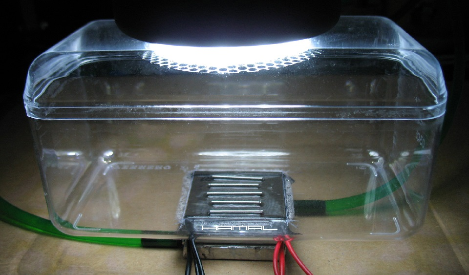
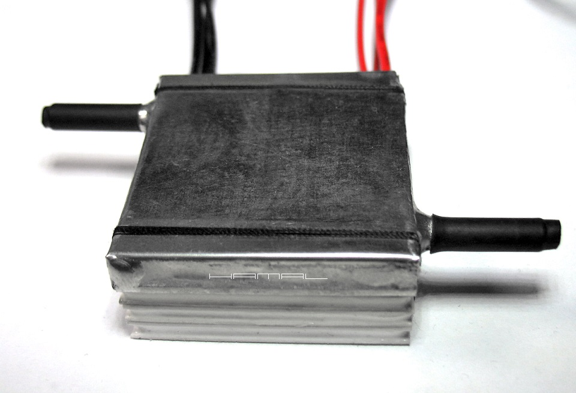
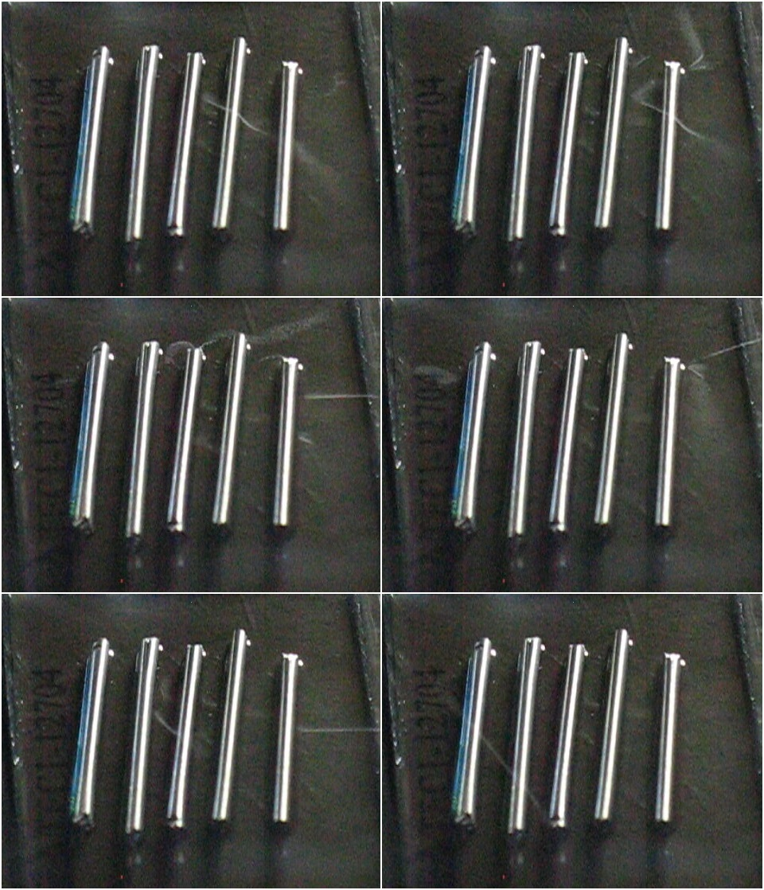

A Home Made Thermoelectric Cloud Chamber
|
WSTĘP . Dyfuzyjna komora mgłowa pozwala w domu na własne oczy zobaczyć promieniowanie radioaktywne. Jej budowa nie jest zbyt trudna, a staje się zupełnie prosta, gdy posiadamy już jakieś doświadczenie w pracy z Ogniwami Peltiera. Dyfuzyjna komora mgłowa jest to szczelne przeźroczyste pudełko z bardzo mocno chłodzonym dnem (lub fragmentem dna), w którego wnętrzu unosi się duże stężenie oparów Alkoholu Izopropylowego. Wiele urządzeń prezentowanych w internecie stanowi bardzo skomplikowane konstrukcje, co może sprawiać wrażenie, że nie ma prostego sposobu na osiągnięcie sukcesu w tym zakresie, jednak to nie jest prawda, da się uzyskać pożądane zjawisko z użyciem prostych części, czego przykładem jest opisane tu moje urządzenie. OPIS BUDOWY . - Jako komory głównej użyłem mojego ulubionego pudełka o wszechstronnym zastosowaniu tj. Ferrero Rocher 200g, które jest wyjątkowo poręczne, bo posiada proste ścianki i dość łatwo poddaje się obróbce, jednak jest stosunkowo kruche, więc przy cięciu trzeba zachować ostrożność, aby go nie uszkodzić. - Do stworzenia fragmentu chłodzonej podłogi wykorzystałem połączone kaskadowo trzy Ogniwa Peltiera o rozmiarze 40x40mm. - Do zasilania Ogniw Peltiera wykorzystałem zasilacz komputerowy, tzw. ATX. - Odbiorem ciepła z gorącej strony kaskady ogniw zajął się blok wodny (samodzielnie zlutowany z cienkiej blaszki). Woda wpływa z jednej strony, odbiera ciepło z Ogniw Peltiera, nagrzewając się, i wypływa drugą stroną do układu chłodzącego ją, aby powrócić jako zimna i ponownie wykonać pracę chłodzenia Ogniw Peltiera. Przepływ wody zapewnia pompka akwariowa. Pomogła mi troszkę pora roku, zima, bo wystarczyło pojemnik z wodą, pompką i radiatorem wystawić za okno, wężyki puścić szczeliną niedomkniętego okna, aby w łatwy sposób uzyskać niską temperaturę cieczy chłodzącej. Latem zestaw chłodzenia cieczy można umieścić w komorze zamrażalnika lodówki i spełni podobne zadanie. - Pod wieczkiem pudełka Komory Mgłowej podwieszony jest płatek kosmetyczny, na który dozujemy Alkohol Izopropylowy. Alkohol utworzy mgiełkę, w której będą pojawiały się tory cząstek. Ja stosuję Alkohol Izopropylowy Kontakt IPA Plus. Próbki promieniotwórcze . A skąd pozyskać radioaktywne próbki? Czy należy jechać do elektrowni atomowej? Nie jest aż tak źle, wystarczy udać się do marketu budowlanego po elektrodę spawalniczą. Jednak to nie może być pierwsza lepsza elektroda, lecz odpowiednio domieszkowana. Ja zastosowałem Elektrody Wolframowe WT 20 (czerwone), które posiadają w składzie domieszkę Toru, a Tor (Th) to pierwiastek promieniotwórczy. Elektrody wolframowe torowane składają się z ok. 98 procent wolframu i ok. 2 procent toru. Kluczem do uzyskania oczekiwanego zjawiska jest dostateczne wychłodzenie części roboczej podstawy do temperatury rzędu -30℃. Najczęstszą przyczyną braku wystąpienia oczekiwanego zjawiska jest zbyt wysoka temperatura chłodzonej części roboczej. Dyfuzyjna komora mgłowa gotowa do pracy. Prawda, że bardzo proste urządzenie? .  Samodzielnie wykonany blok wodny służący do odbierania ciepła z gorącej strony kaskady Ogniw Peltiera. .  Dwa słowa o Ogniwach Peltiera . Ogniwo Peltiera to dwie ceramiczne płytki z umieszczonymi pomiędzy nimi małymi kosteczkami wykonanymi z odpowiednich substancji. Z takiej płytki wyprowadzone są dwa przewody, do których podłącza się zasilanie, plus i minus. Gdy do takiej płytki podłączymy zasilanie, to zaczyna ona transportować ciepło z jednej strony na drugą, przez co strona, z której ciepło jest zabierane, staje się zimna, a strona, na którą ciepło jest transportowane, staje się gorąca. Naszym zadaniem jest ze strony gorącej zgromadzone ciepło zabrać, dzięki czemu zwolni się miejsce na kolejne porcje ciepła sprowadzone przez Ogniwo Peltiera z jego zimnej strony. Odbiór ciepła realizujemy za pomocą radiatora, który oddaje ciepło do otoczenia (powietrza) lub bloku wodnego, który odbiera ciepło za pomocą chłodnej cieczy. Ogniwa Peltiera kaskadowe . Jak już wspomniałem, Ogniwo Peltiera jedną stroną pożera ciepło i przesyła je na drugą stronę, gdzie trzeba je zabrać dalej. To jak bardzo uda się obniżyć temperaturę zimnej strony ogniwa, w dużym stopniu zależy od tego, jaką temperaturę posiada jego ciepła strona. Nawet najskuteczniejszy odbiór ciepła z ciepłej strony Ogniwa Peltiera ma swoje ograniczenia, wymyślono więc, aby dodać tam kolejne Ogniwo Peltiera i sprawić, że po ciepłej stronie pierwszego Ogniwa Peltiera będzie jeszcze chłodniej, ponieważ drugie Ogniwo Peltiera wszystko natychmiast poda dalej, wtedy zimna strona pierwszego Ogniwa Peltiera, mając gdzie pchać kolejne porcje ciepła, stanie się jeszcze zimniejsza, a tym samym, jeszcze mocniej obniży temperaturę części roboczej podłogi Komory Mgłowej. Takie połączenie Ogniw Peltiera nazywa się kaskadowym. Można łączyć ze sobą nawet kilka Ogniw, pamiętać jednak należy, że im chłodniejsza staje się dzięki temu zimna strona pierwszego Ogniwa Peltiera, tym bardziej gorąca staje się ciepła strona ostatniego Ogniwa Peltiera i tym skuteczniejszy musi być system chłodzenia, bo trzeba całe to nagromadzone ciepło natychmiast skutecznie gdzieś zabrać i temu służy nasz blok wodny z zimną wodą. Bardziej szczegółowe rozważania na temat samych Modułów-Ogniw Peltiera TUTAJ. Klatki filmu na których zarejestrowały się ślady cząstek. .  Film - dyfuzyjna komora mgłowa - ślady promieniowania - elektroda spawalnicza WT 20 czerwona. .
MOGĄ CIĘ ZAINTERESOWAĆ RÓWNIEŻ


|